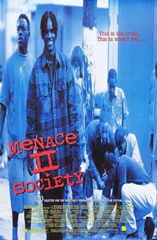

Menace II Society

Allen Hughes and Albert Hughes
1993
97 minutes
Wikipedia link
IMDB link
TV Tropes link
This is text.
Time to choose something different:
- Whether you're a gangsta in South Central or some idiot rave kid in Manchester trying to make an album, stay away from crack! - Turn to section 221
- I do love films that have a tragic shootout at the end! - Turn to section 154
- This movie gives me the strange urge to watch 1990s hood films and early surrealist films in an endless loop for some reason! - Turn to section 14